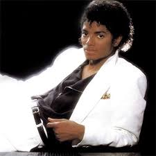

|  |
Michael Joseph Jackson fue un músico, cantante, compositor, productor musical y actor norteamericano, nacido el 29 de agosto de 1958, en Gary, Indiana, Estados Unidos. Octavo de diez hijos de una familia afroamericana de clase trabajadora, Michael apenas a los 4 años ya mostraba enorme talento en la música, el baile y el canto. Muy pronto, formaría junto a sus hermanos el grupo Jackson Five, firmando un contrato, en 1968, con Motown Records, una de las discográficas más importantes de ese entonces. Con la agrupación, Michael se volvería una sensación, vendiendo más de 8 millones de ejemplares que lo llevaron a lanzar su carrera como solista. Considerado como uno de los músicos que revolucionó la industria musical, Jackson publicó varios de los discos más influyentes e importantes de la música, entre ellos Of The Wall (1979), Thriller (1982), Bad (1987) y Dangerous (1991), entre otros. Apodado como “El Rey del Pop” |
|
|
|